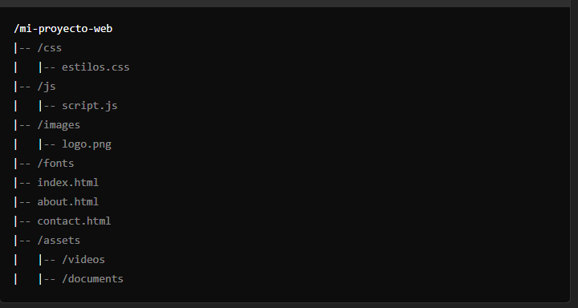

1-Origenes de la web
Web 2.0
La Web 2.0, que emergió a principios de los años 2000, se caracteriza por la interacción y la colaboración de los usuarios. A diferencia de la Web 1.0, donde los usuarios eran principalmente consumidores de contenido, la Web 2.0 permitió la creación y el intercambio de contenido, promoviendo plataformas como blogs, redes sociales (Facebook, Twitter) y wikis. Este cambio transformó la web en un entorno más dinámico y participativo, dando voz a los usuarios y fomentando la comunidad.
Web 3.0
La Web 3.0, también conocida como la "web semántica", busca mejorar la interconexión y la comprensión de los datos a través de tecnologías como el uso de inteligencia artificial y blockchain. Su objetivo es permitir que las máquinas entiendan mejor el contenido de la web, lo que facilitaría búsquedas más efectivas y la personalización de la información. La Web 3.0 enfatiza la descentralización, permitiendo que los usuarios tengan un mayor control sobre sus datos y su identidad en línea.
La W3C y los estándares
La World Wide Web Consortium (W3C) es una comunidad internacional que desarrolla estándares abiertos para garantizar el crecimiento a largo plazo de la web. Fundada por Tim Berners-Lee en 1994, la W3C establece protocolos y pautas para mejorar la interoperabilidad y la accesibilidad de la web. Esto incluye tecnologías como HTML, CSS y XML, que son fundamentales para la creación de contenido web. La W3C juega un papel crucial en la evolución de la web, promoviendo estándares que permiten a los desarrolladores crear experiencias en línea más ricas y accesibles.
2-Lenguajes de etiquetas
1. SGML:
SGML es un lenguaje de marcado estándar que se desarrolló en la década de 1980. Sirve como base para varios lenguajes de marcado, incluyendo HTML y XML. SGML permite la definición de documentos estructurados y es utilizado en aplicaciones donde la organización y el manejo de grandes volúmenes de información son cruciales, como en la publicación y la documentación técnica
2.XML:
XML, derivado de SGML, es un lenguaje de marcado que se utiliza para almacenar y transportar datos. A diferencia de HTML, que está diseñado para mostrar datos, XML se centra en la estructura y el significado de la información. Permite a los desarrolladores definir sus propias etiquetas, lo que proporciona flexibilidad en la organización de los datos. XML es ampliamente utilizado en aplicaciones web, servicios web y en la interoperabilidad entre sistemas.
3. HTML (HyperText Markup Language)
HTML es el lenguaje de marcado fundamental para la creación de páginas web. Introducido en los años 90, HTML permite estructurar contenido mediante el uso de etiquetas. Este lenguaje se centra en la presentación de información, utilizando etiquetas para definir encabezados, párrafos, enlaces, imágenes, y otros elementos multimedia. HTML es esencial para cualquier desarrollo web, y ha evolucionado con el tiempo para incluir características más avanzadas.
4. XHTML (eXtensible HyperText Markup Language)
XHTML es una reformulación de HTML como un lenguaje XML. Lanzado en 2000, busca combinar la flexibilidad de HTML con la rigidez y la estructura de XML. XHTML exige que los documentos sean bien formados, lo que mejora la consistencia y la interoperabilidad en diferentes plataformas. Aunque su uso ha disminuido en favor de HTML5, sigue siendo relevante para ciertos proyectos que requieren una estricta adherencia a los estándares.
5. HTML5
HTML5 es la última versión del lenguaje HTML, estandarizada en 2014. Introduce nuevas funcionalidades que permiten a los desarrolladores crear aplicaciones web más interactivas y multimedia sin depender tanto de complementos externos. Algunas de sus características más destacadas incluyen soporte para audio y video nativo, nuevas etiquetas semánticas (como header, footer, article, etc.), y APIs para gráficos y almacenamiento local. HTML5 ha revolucionado el desarrollo web al hacer que las aplicaciones sean más accesibles y potentes.
III. Otros Lenguajes Relacionados al Desarrollo Web
1. CSS/CSS3
CSS (Cascading Style Sheets) es un lenguaje de hojas de estilo que se utiliza para describir la presentación de documentos HTML. CSS permite a los desarrolladores aplicar estilos (como colores, fuentes y espaciados) de manera separada del contenido, lo que facilita el diseño y la mantenibilidad de las páginas web. CSS3 es la versión más reciente, que introduce nuevas características como transiciones, transformaciones, animaciones y un modelo de caja mejorado, permitiendo un diseño más flexible y atractivo.
2. JavaScript
JavaScript es un lenguaje de programación que se utiliza para añadir interactividad y dinamismo a las páginas web. Se ejecuta del lado del cliente, lo que permite a los desarrolladores crear aplicaciones web interactivas, manipular el DOM (Document Object Model) y responder a eventos del usuario. JavaScript es fundamental para el desarrollo web moderno y es compatible con una amplia variedad de frameworks y bibliotecas, como React, Angular y Vue.js.
3. Ajax
Ajax (Asynchronous JavaScript and XML) es una técnica que permite la actualización asíncrona de partes de una página web sin necesidad de recargarla completamente. Utiliza JavaScript y XMLHttpRequest para enviar y recibir datos del servidor en segundo plano. Ajax mejora la experiencia del usuario al permitir una navegación más fluida y rápida, y es fundamental para el desarrollo de aplicaciones web interactivas y dinámicas.
4.Tecnologías y Lenguajes del Lado del Servidor
Existen varios lenguajes y tecnologías para el desarrollo del lado del servidor, que permiten gestionar la lógica de la aplicación y la interacción con bases de datos. Algunos de los más populares son:
PHP: Un lenguaje de script ampliamente utilizado para el desarrollo web, especialmente en la creación de aplicaciones dinámicas y sistemas de gestión de contenido. Python: Con frameworks como Django y Flask, Python se ha vuelto popular para el desarrollo web por su simplicidad y versatilidad. Ruby: Usado con el framework Ruby on Rails, es conocido por su enfoque en la productividad y la facilidad de uso. Node.js: Permite ejecutar JavaScript en el servidor, facilitando el desarrollo de aplicaciones web en tiempo real.
5. Navegadores
Los navegadores son software que permite a los usuarios acceder y visualizar contenido web. Algunos de los navegadores más populares incluyen Google Chrome, Mozilla Firefox, Safari y Microsoft Edge. Cada navegador tiene su propio motor de renderizado y características, lo que puede afectar cómo se visualizan las páginas web.
6. Motores Renderizados
Los motores de renderizado son componentes de los navegadores que interpretan el HTML, CSS y JavaScript para mostrar el contenido de las páginas web. Algunos de los motores de renderizado más conocidos son:
Blink: Usado por Google Chrome y otros navegadores basados en Chromium. WebKit: Utilizado por Safari y anteriormente por Chrome. Gecko: Usado por Mozilla Firefox. Trident/EdgeHTML: Anteriormente utilizado por Internet Explorer y las primeras versiones de Microsoft Edg4-Herramientas de Desarrollo
1. Software WYSIWYG
El software WYSIWYG (What You See Is What You Get) permite a los desarrolladores y diseñadores crear páginas web de manera visual, sin necesidad de escribir código manualmente. Estas herramientas presentan una interfaz gráfica donde los usuarios pueden arrastrar y soltar elementos, lo que facilita el diseño para quienes no tienen experiencia en programación. Ejemplos populares incluyen Adobe Dreamweaver y Microsoft Expression Web.
2. Otras Alternativas
Figma Figma es una herramienta de diseño colaborativo basada en la web que permite a los equipos crear interfaces de usuario (UI) y prototipos de manera conjunta. Su enfoque en la colaboración en tiempo real permite a diseñadores y desarrolladores trabajar simultáneamente, lo que mejora la comunicación y la eficiencia en el proceso de diseño.
InVisionInVision es una plataforma que se centra en la creación de prototipos interactivos. Permite a los diseñadores compartir sus ideas y obtener retroalimentación de manera visual. Además, InVision incluye herramientas de gestión de proyectos y comunicación, facilitando la colaboración entre equipos de diseño y desarrollo.
Zeplin Zeplin es una herramienta que conecta el diseño con el desarrollo, proporcionando una plataforma donde los diseñadores pueden exportar sus trabajos y los desarrolladores pueden acceder a especificaciones, estilos y activos. Esto simplifica la transición del diseño a la implementación, asegurando que los desarrolladores tengan toda la información necesaria para construir la interfaz correctamente.
GitHubGitHub es una plataforma de desarrollo colaborativo que utiliza el sistema de control de versiones Git. Permite a los desarrolladores gestionar proyectos, realizar un seguimiento de cambios en el código y colaborar con otros mediante "pull requests". GitHub es fundamental para el desarrollo de software moderno, especialmente en entornos de trabajo colaborativo, y ofrece herramientas para la gestión de proyectos, documentación y revisión de código.
El Diseño De Una Página Web

Estructura De Una Página Web
Jerarquía de Directorio de un Proyecto Web
La jerarquía de directorio de un proyecto web es la organización de los archivos y carpetas que conforman el proyecto. Una estructura bien definida facilita la gestión y el mantenimiento del código. A continuación, se presenta un ejemplo típico:
